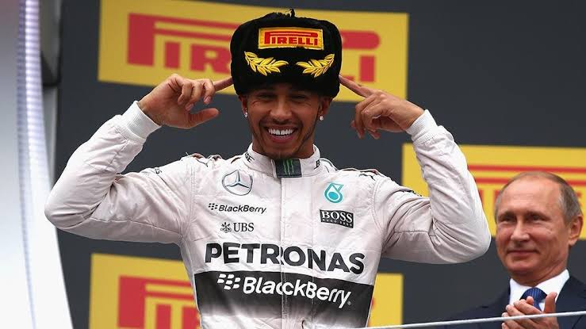

Легенды Формулы 1
Первый этап чемпионата мира Формулы 1 прошёл в 1950 году на британской трассе Сильверстоун. В первые годы главной звездой чемпионата был Хуан Мануэль Фанхио: аргентинский гонщик завоевал пять титулов за семь сезонов, выступая за разные команды.
В конце 1980-х за победы боролись Айртон Сенна и Ален Прост. В 2000-х Михаэль Шумахер выиграл пять титулов подряд с Ferrari, доведя их общее число до семи. В 2020 году Льюис Хэмилтон повторил этот результат.
Подробнее »